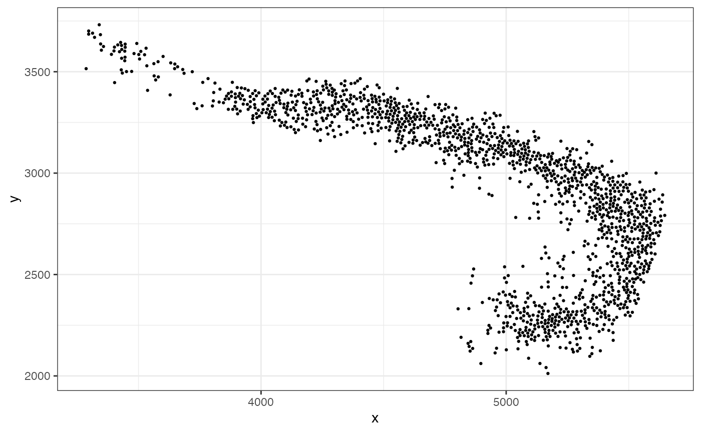
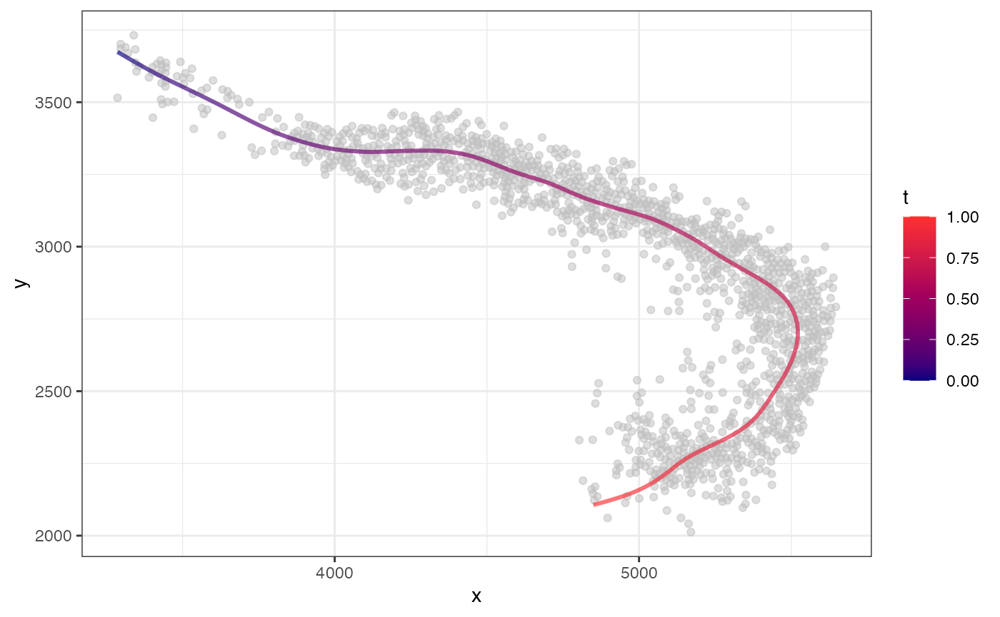
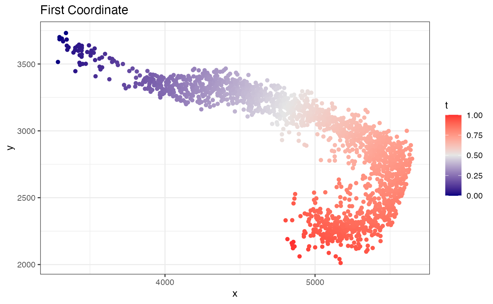
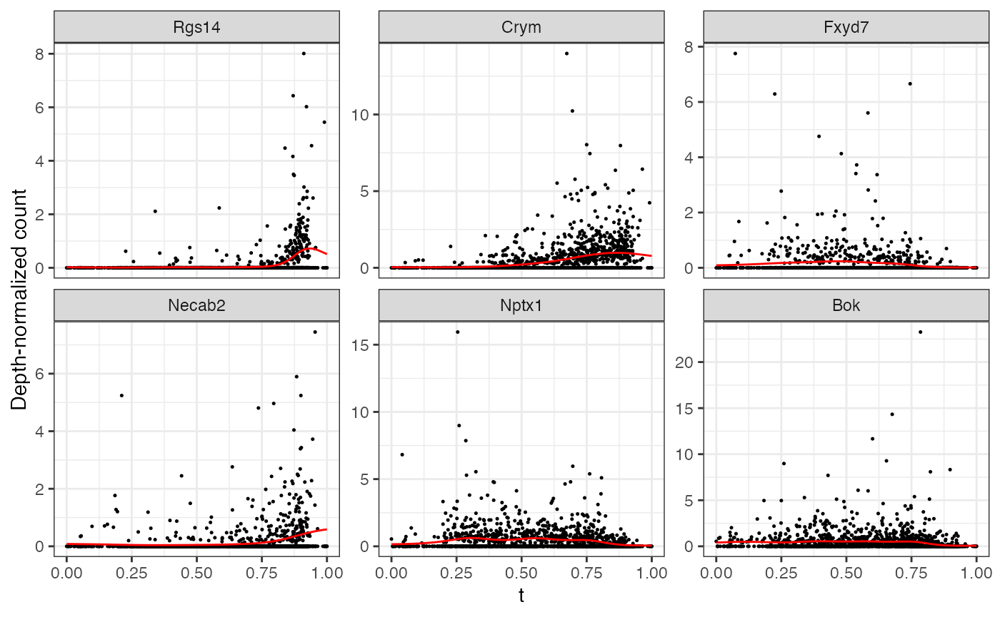
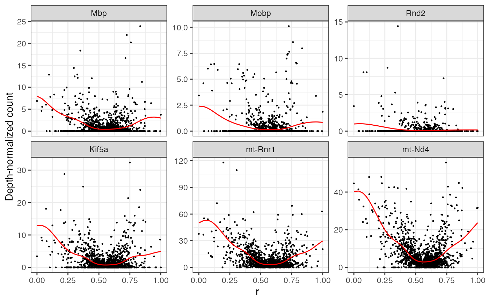
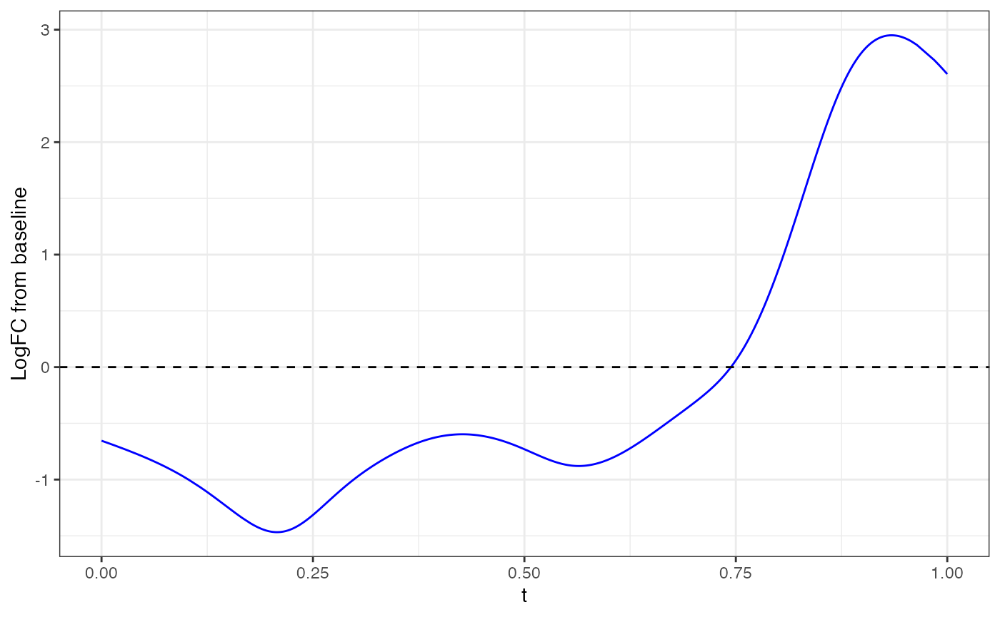
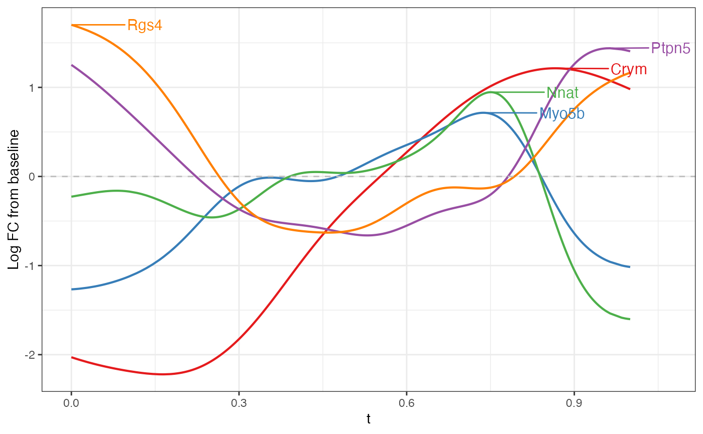

Slide-seq Mouse Hippocampus
ca3.RmdIn this analysis, we will use MorphoGAM to analyze CA3
cells in the mouse hippocampus.
First, we load the necessary packages.
Next, we load the data and remove outlier points:
spe <- STexampleData::SlideSeqV2_mouseHPC()
#> see ?STexampleData and browseVignettes('STexampleData') for documentation
#> loading from cache
ixs <- which(spe$celltype == "CA3") #subset to CA3
xy <- spatialCoords(spe)[ixs,]
Y <- counts(spe)[,ixs]
xy.dist <- as.matrix(dist(xy))
knn <- 20
prune.outlier <- 3
nnk <- apply(xy.dist, 1, function(x) sort(x)[knn+1])
outlier <- which(nnk > (prune.outlier)*median(nnk))
xy <- xy[-outlier,]; Y <- Y[,-outlier]
data.frame(x=xy[,1], y=xy[,2]) |> ggplot(aes(x=x,y=y)) +
geom_point(size=0.5) + theme_bw()
Now, we can fit a 1D curve passing through and observe the resulting coordinates:
fit <- CurveFinder(xy)
fit$curve.plot
fit$coordinate.plot
fit$xyt also includes the values. Now to find variable
genes along this path, we can use the MorphoGAM() function.
For speed, let’s first subset to 2000 variable genes
# Find 2000 variable genes based
logCPM <- log2(1e6*(Y/Matrix::colSums(Y)) + 1)
var.genes <- names(sort(apply(logCPM, 1, var), decreasing=TRUE))[1:2000]
Y <- as.matrix(Y[var.genes,])Now we fit the model. In the design argument, we specify
that we want a model that fits a smooth function to both the
(first coordinate) and
(second coordinate).
mgam <- MorphoGAM(Y, curve.fit=fit,
design = y ~ s(t) + s(r))
#> ================================================================================The first thing we can do is look at genes with a large peak in the direction. Here, the peak statistic is defined as the maximum log fold change from the baseline.
mgam$results |> arrange(desc(peak.t)) |> head()
#> peak.t range.t pv.t peak.r range.r pv.r intercept
#> Rgs14 2.688307 0.5387266 0 0.06277392 0.002950812 4.016183e-02 -9.614966
#> Crym 1.827735 0.8088010 0 0.32335465 0.104397880 5.124054e-04 -7.573050
#> Fxyd7 1.659239 0.1689494 0 0.00000000 0.000000000 8.469104e-01 -8.702739
#> Necab2 1.413801 0.3406113 0 0.05697628 0.010565701 4.310323e-02 -8.679102
#> Nptx1 1.391123 0.4382267 0 0.12000145 0.053388796 3.192286e-02 -7.406455
#> Bok 1.355025 0.3707605 0 0.23728096 0.157378967 -1.169573e-06 -7.389233
top6 <- mgam$results |> arrange(desc(peak.t)) |> head() |> rownames()Note that any list of genes can always be plotted with
plotGAMestimates().
plotGAMestimates(Y, genes=top6, curve_fit=fit, mgam_object=mgam, nrow=2) Repeating the same for the direction:
top6 <- mgam$results |> arrange(desc(peak.r)) |> head() |> rownames()
plotGAMestimates(Y, genes=top6, curve_fit=fit, mgam_object=mgam, nrow=2, type="r")
Note that these statistics are defined for convenience, but the
entire function is available in the output of MorphoGAM().
Example, with Rgs14 gene:
gene <- "Rgs14"
fitted_function <- mgam$fxs.t[gene,]
data.frame(x=fit$xyt$t, y=fitted_function) |> ggplot(aes(x=x,y=y)) +
geom_line(color="blue") + theme_bw() + geom_hline(yintercept = 0, linetype="dashed") + xlab("t") + ylab("LogFC from baseline")
Finally, we can look at the FPC loadings. Here, we plot the second FPC loading in the direction.
plotFPCloading(mgam_object = mgam,
curve.fit = fit,
L=2)